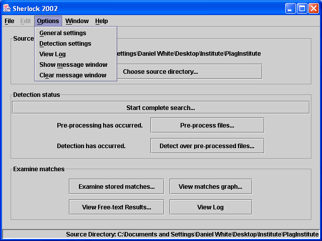
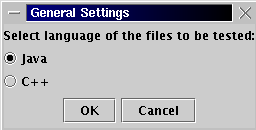

General Setting
In the current version, Java is set as the default language of the summision.
The alternate one is C++. Make sure you change your language options before running the detection stage.
-On the Options menu, Click "General Settings" and
-Click the radio button of the language of the submissions,
-Click "OK".
Option Menu

General Settings Window
